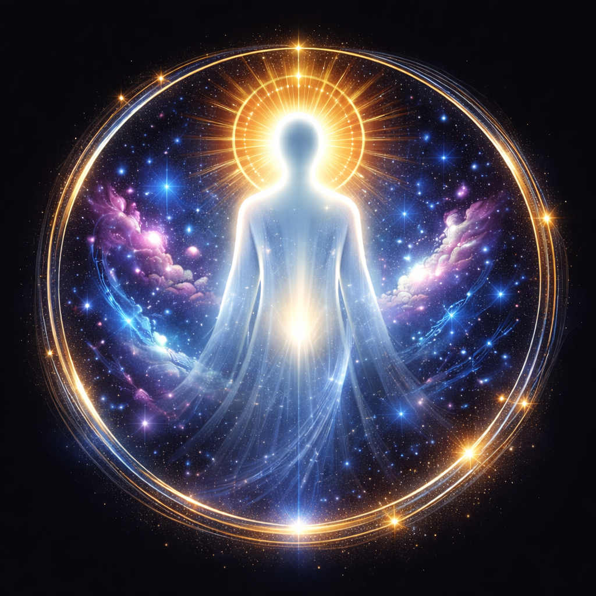

Apresenta
▶
ASSISTIR
Apresenta

Master Spirit
Jesus
Mestres Espirituais
Cada Mestre, com sua Sabedoria
e Personalidade.
Falando com você, na primeira pessoa.
Salas de Estudo
Dezenas de títulos
ao seu alcance.
Mestre Emmanuel guia seu caminho.
Cem por cento do conteúdo.
Evangelho no Lar
Reúna sua família
e transforme seu lar.
Sessão guiada com mestres facilitadores.
Passe Espiritual
Higiene e cura
do espírito.
Passe espiritual guiado na palma da sua mão.